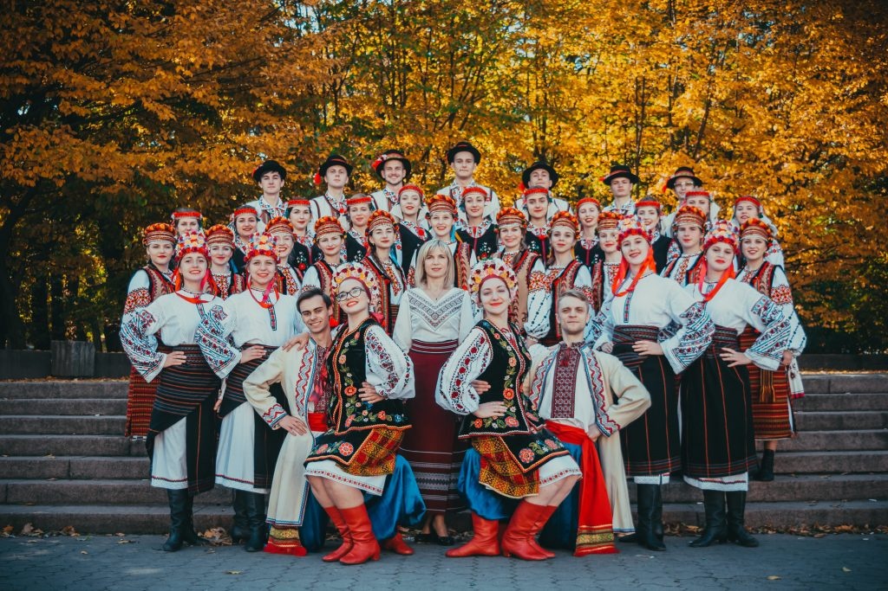

Коротко про нас
Народний ансамбль пісні і танцю “Черемош” — це обличчя Львівського національного університету імені Івана Франка, яке об’єднало талановитих, творчих, розумних та свідомих особистостей.
Ансамбль засновано ще в далекому 1963 році. У складі колективу — студенти Львівського національного університету ім. І. Франка. “Черемош” — це більше 60 учасників хорової групи та близько 50 танцювальної. Неабиякою родзинкою колективу є його оркестр, до якого входять 15 прекрасних музикантів.
“Черемош” — це неодноразовий учасник міжнародних фестивалів у всьому світу. Карта виступів колективу вражає своєю масштабністю — численні міста України, Польщі, Словаччини, Франції, Білорусі, Литви, Молдови, Румунії, Німеччини, США, Канади, Греції, Іспанії, Македонії, Австрії, Хорватії та Болгарії.
Життя “Черемошу” — це не лише пісні, танці чи музичні композиції, а ще й віковічні традиції та дружня атмосфера. Тут завжди панує любов до українських традицій та народних строїв.
| Диригент | Староста Хору | Балетмейстр | Староста танців |
|---|---|---|---|
| Тетяна Когут | Вікторія Музика | Юрій Різун | Наталія |